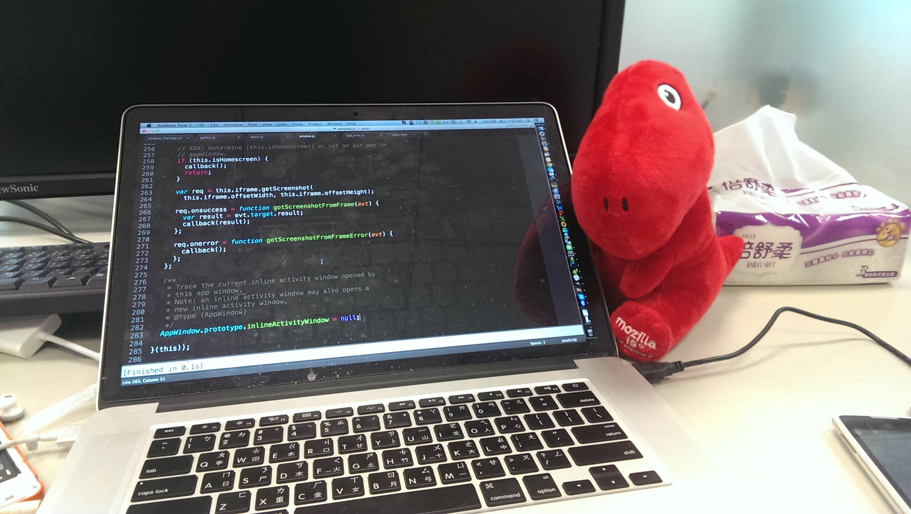

Alive@Mozilla/2013 Q2 Quarter Report
Alive Kuo
Alive@Mozilla/2013 Q2 Quarter Report

Numbers
89 B2G bugs resolved.
Gaia: 9
Gaia::Camera: 3
Gaia::Clock: 1
Gaia::Dialer: 7
Gaia::FMRadio: 1
Gaia::First Time Experience: 3
Gaia::Gallery: 1
Gaia::Keyboard: 1
Gaia::Settings: 8
Gaia::System: 47
Gaia::Video: 6
General: 2
82 patches reviewed.
Not-a-Number
Code traced
Gecko/DOM:Activity
Gecko/DOM:IPC:ProcessPriorityManager
Gecko/DOM:AudioChannel
Software Button Manager
AppWindow Status Watcher
Patch bgzla(by :gasolin)
Review and present current system app module architecture
Raise Window Manager Redesign Plan
var Q3 = new Quarter();
System app API documentation
System app modulization plan
Window Manager redesign plan
System app test coverage
API Watching
Media Control
New Audio Channel API